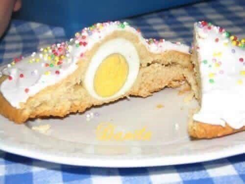

A Playful Surprise on the Palate

Cannoli
Step into a world of culinary creativity with our Mini Sweet Cake featuring Colored Sprinkles and a Cooked Egg Center!
These adorable, bite-sized cakes are bursting with rainbow-colored sprinkles, adding a fun and festive touch.
But the real surprise lies within a cooked egg at the center! Experience the perfect balance of sweet and savory flavors in each delightful bite.
Ingredients
- 1 cup all-purpose flour
- 1/2 cup granulated sugar
- 1/4 cup unsalted butter, softened
- 1/4 cup milk
- 1 large egg
- 1 teaspoon vanilla extract
- 1 teaspoon baking powder
- A pinch of salt
- Colored sprinkles (rainbow or any color of your choice)
- 6 small cooked eggs (hard-boiled and peeled)
Recipe Instructions
- Preheat the oven: Preheat your oven to 350°F (175°C). Line a mini muffin tin with paper liners or grease it lightly with butter..
- Mix the batter: In a mixing bowl, cream together the softened butter and granulated sugar until light and fluffy.
- Combine dry Ingredients: In a separate bowl, whisk together the all-purpose flour, baking powder, and a pinch of salt.
- Incorporate dry ingredients: Gradually add the dry ingredients to the wet ingredients, alternating with milk. Mix until a smooth batter forms.
- Add colored sprinkles: Gently fold in a handful of colored sprinkles into the cake batter. The sprinkles will add a burst of color and sweetness to the cakes.
- Fill the muffin tin: Fill the muffin tin.
- Add a cooked egg: lace one small cooked egg in the center of each mini cake batter-filled cup. The cooked egg will act as a surprise center.
- SCover with more batter: Carefully spoon additional cake batter over each egg until they are fully covered..
- Bake: Place the mini muffin tin in the preheated oven and bake for about 12-15 minutes or until the cakes are golden brown and a toothpikc.
- Cool and decorate: Remove the mini sweet cakes from the oven and let them cool in the muffin tin for a few minutes before transferring them to a wire rack to cool completely.
- Serve and enjoy: Your Oreo cookies with bacon are now ready to be served.
Sfogliatelle
Home
Gelato